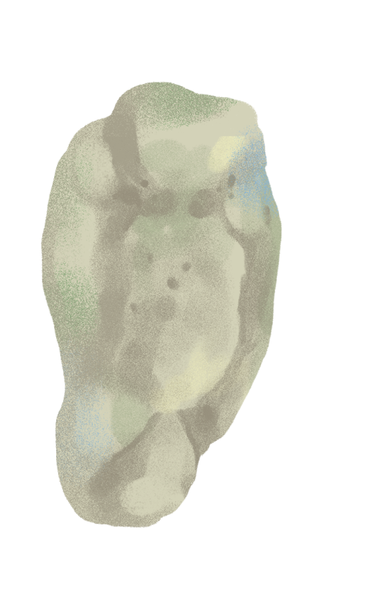
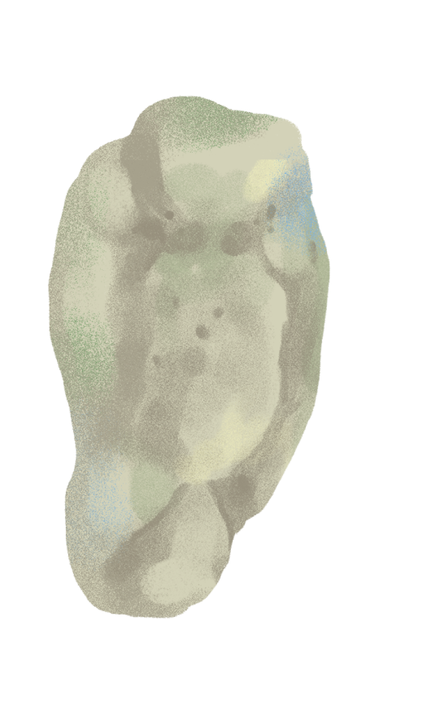

ข้อปฏิบัติสำหรับนักท่องเที่ยว
1. ควรเรียนรู้เกี่ยวกับแนวปะการังและสิ่งแวดล้อมทางทะเล
2. ควรระมัดระวังการใช้ตีนกบไม่ แตะต้องปะการัง
3. อย่าไล่ตามหรือจับต้องสัตว์ที่ว่ายน้ำอยู่ในทะเล
4. อย่าเก็บเปลือกหอยเรียนรู้และทำความรู้จักกับมันด้วยสายตาดีกว่า
5. หลีกเลี่ยงการให้อาหารสัตว์ทะเล
6. เลือกใช้ครีม กันแดด ที่ทำจากส่วนผสมที่ปลอดภัยต่อปะการัง หรือดูว่าข้างหลอดมีคำว่า reef safe
(ปลอดภัยต่อปะการัง)
ข้อปฏิบัติสำหรับนักดำน้ำ
1. ควรเรียนรู้เกี่ยวกับแนวปะการังและสิ่งแวดล้อมทางทะเล
2. ควรระมัดระวังการใช้ตีนกบไม่แตะต้องปะการัง
3. อย่าไล่ตามหรือจับต้องสัตว์ที่ว่ายน้ำอยู่ในทะเล
4. อย่าเก็บเปลือกหอยเรียนรู้และทำความรู้จักกับมันด้วยสายตาแทน
5. หลีกเลี่ยงการให้อาหารสัตว์ทะเล


/ฟองน้ำ.gif) 


/ปะการังดอกไม้.gif)

/สาหร่าย2.gif)
/พุ่มสีเขียว.gif)